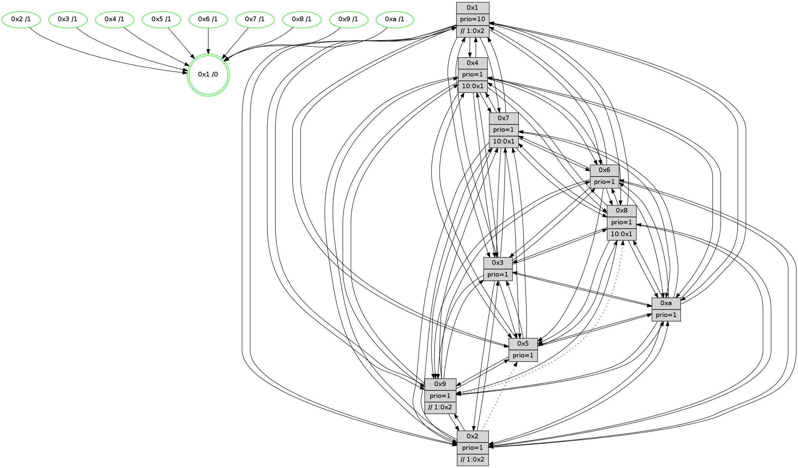

>> << IDX [start] -100 -25 -5 +0 +5 +25 +100 [940.003189087]
 Previous packets
----------------------------------------------------------------------
935.151933 beacon01(faad) #0 coord=01,02,03,04,05,06,07,0a,09,08 cycle=688.0ms assoc
-- color-indic=1 64 ab 20
935.161916 beacon02(faad) #0 coord=01,02,03,04,05,06,07,0a,09,08 cycle=688.0ms assoc 64 38 11
935.171916 beacon03(faad) #0 coord=01,02,03,04,05,06,07,0a,09,08 cycle=688.0ms assoc 64 42 5c
935.181917 beacon04(faad) #0 coord=01,02,03,04,05,06,07,0a,09,08 cycle=688.0ms assoc 64 35 b6
935.191916 beacon05(faad) #0 coord=01,02,03,04,05,06,07,0a,09,08 cycle=688.0ms assoc 64 4f fb
935.201915 beacon06(faad) #0 coord=01,02,03,04,05,06,07,0a,09,08 cycle=688.0ms assoc 64 c1 2c
935.211917 beacon07(faad) #0 coord=01,02,03,04,05,06,07,0a,09,08 cycle=688.0ms assoc 64 bb 61
935.221922 beacon0a(faad) #0 coord=01,02,03,04,05,06,07,0a,09,08 cycle=688.0ms assoc 64 ca 6a
935.231922 beacon09(faad) #0 coord=01,02,03,04,05,06,07,0a,09,08 cycle=688.0ms assoc 64 44 bd
935.241922 beacon08(faad) #0 coord=01,02,03,04,05,06,07,0a,09,08 cycle=688.0ms assoc 64 3e f0
935.255055 [Hello(3): seq=598 sym=1,7,6,2,4,8,9,10,5 sysInfo= stat=1:12,11,3,0/7:3,2,5,7/6:13,15,9,2/2:12,5,10,9/4:13,10,13,6/8:6,11,5,1/9:10,13,8,10/10:1,0,6,2/5:3,14,4,10]
935.259058 [Hello(2): seq=594 sym=4,5,7,6,3,9,8,10,1 sysInfo=hasWarning stat=4:3,13,4,5/5:7,12,4,0/7:2,0,0,9/6:10,2,8,8/3:1,11,7,5/9:2,3,9,4/8:6,13,6,8/10:5,14,9,9/1:7,14,13,1]
935.262061 [Hello(6): seq=598 sym=2,3,5,4,7,9,8,10,1 sysInfo= stat=2:3,4,6,8/3:14,8,15,9/5:13,1,13,12/4:10,4,5,1/7:8,15,11,5/9:2,4,13,4/8:5,1,9,1/10:8,10,3,10/1:12,4,10,1]
935.264571 [Color(2) seq=243 @0:0 prio=1 >>1.@5,1.@6]
935.266356 [Color(4) seq=203 @0:0 prio=1 >10.@1,1.@2,1.@3,1.@5]
935.269570 [Hello(1): seq=507 sym=4,2,9,5,10,3,8,6,7 sysInfo=coloring-mode-on,ColoringModeRequestCalled stat=4:7,1,14,1/2:7,7,12,11/9:5,3,12,5/5:1,5,4,4/10:8,5,8,2/3:10,14,8,2/8:10,15,6,0/6:5,5,9,10/7:5,2,12,11]
935.272131 [Hello(5): seq=598 sym=7,6,4,3,1,9,8,10 sysInfo=hasWarning stat=7:13,0,0,8/6:11,15,10,10/4:11,13,14,7/3:4,1,6,9/1:11,0,14,1/9:5,7,11,4/8:8,9,10,8/10:6,11,5,4]
935.274433 [STC(1) #0.122 tree-change,inconsistent-stability,stable,to-color d=0]
935.277815 [Color(5) seq=251 @0:0 prio=1]
935.283682 [Color(6) seq=230 @0:0 prio=1]
----------------------------------------------------------------------
935.940062 beacon01(faad) #0 coord=01,02,03,04,05,06,07,0a,09,08 cycle=688.0ms assoc
-- color-indic=1 64 17 25
935.950044 beacon02(faad) #0 coord=01,02,03,04,05,06,07,0a,09,08 cycle=688.0ms assoc 64 84 14
935.960045 beacon03(faad) #0 coord=01,02,03,04,05,06,07,0a,09,08 cycle=688.0ms assoc 64 fe 59
935.970045 beacon04(faad) #0 coord=01,02,03,04,05,06,07,0a,09,08 cycle=688.0ms assoc 64 89 b3
935.980047 beacon05(faad) #0 coord=01,02,03,04,05,06,07,0a,09,08 cycle=688.0ms assoc 64 f3 fe
935.990046 beacon06(faad) #0 coord=01,02,03,04,05,06,07,0a,09,08 cycle=688.0ms assoc 64 7d 29
936.000045 beacon07(faad) #0 coord=01,02,03,04,05,06,07,0a,09,08 cycle=688.0ms assoc 64 07 64
936.010051 beacon0a(faad) #0 coord=01,02,03,04,05,06,07,0a,09,08 cycle=688.0ms assoc 64 76 6f
936.020051 beacon09(faad) #0 coord=01,02,03,04,05,06,07,0a,09,08 cycle=688.0ms assoc 64 f8 b8
936.030050 beacon08(faad) #0 coord=01,02,03,04,05,06,07,0a,09,08 cycle=688.0ms assoc 64 82 f5
936.041287 [Hello(4): seq=598 sym=5,7,6,2,3,9,8,10,1 sysInfo= stat=5:10,10,11,10/7:2,5,14,6/6:6,14,9,9/2:10,8,6,9/3:1,6,8,7/9:1,15,0,7/8:14,14,2,1/10:4,5,2,9/1:3,0,14,1]
936.043710 [STC(5)->1 #0.122 tree-change,inconsistent-stability,stable,to-color d=1]
936.045129 [Color(1) seq=279 @0:0 prio=10 >>1.@5,1.@6]
936.049484 [Hello(10): seq=531 sym=6,2,3,8,7,5,4,1 sysInfo=hasWarning stat=6:13,7,14,4/2:3,1,11,4/3:12,0,5,7/8:10,7,2,0/7:2,4,0,0/5:0,3,0,11/4:9,8,3,7/1:13,13,14,1]
936.052365 [Color(7) seq=193 @0:0 prio=1 >10.@1,1.@5,1.@6]
936.054408 [Color(10) seq=219 @0:0 prio=1]
936.058877 [Hello(8): seq=542 sym=5,2,3,4,9,6,7,10,1 sysInfo=hasWarning stat=5:13,6,1,11/2:12,1,12,4/3:15,14,10,11/4:0,4,10,7/9:0,1,0,0/6:0,5,9,10/7:2,3,0,0/10:0,3,3,0/1:2,1,10,0]
936.062644 [Color(8) seq=243 @0:0 prio=1 >10.@1,1.@5,1.@6]
936.071014 [Hello(9): seq=542 sym=2,5,3,4,7,6,10,1 asym=8 sysInfo=hasWarning stat=2:11,8,12,2/5:13,8,9,2/3:10,9,7,11/4:0,8,7,7/7:6,12,12,8/6:11,5,1,8/10:7,12,1,1/1:5,14,14,1/8:3,1,13,1]
936.075834 [Color(9) seq=247 @0:0 prio=1 >>1.@2,1.@3,1.@5]
----------------------------------------------------------------------
936.728193 beacon01(faad) #0 coord=01,02,03,04,05,06,07,0a,09,08 cycle=688.0ms assoc
-- color-indic=1 64 d3 2b
936.738175 beacon02(faad) #0 coord=01,02,03,04,05,06,07,0a,09,08 cycle=688.0ms assoc 64 40 1a
936.748174 beacon03(faad) #0 coord=01,02,03,04,05,06,07,0a,09,08 cycle=688.0ms assoc 64 3a 57
936.758175 beacon04(faad) #0 coord=01,02,03,04,05,06,07,0a,09,08 cycle=688.0ms assoc 64 4d bd
936.768176 beacon05(faad) #0 coord=01,02,03,04,05,06,07,0a,09,08 cycle=688.0ms assoc 64 37 f0
936.778175 beacon06(faad) #0 coord=01,02,03,04,05,06,07,0a,09,08 cycle=688.0ms assoc 64 b9 27
936.788175 beacon07(faad) #0 coord=01,02,03,04,05,06,07,0a,09,08 cycle=688.0ms assoc 64 c3 6a
936.798180 beacon0a(faad) #0 coord=01,02,03,04,05,06,07,0a,09,08 cycle=688.0ms assoc 64 b2 61
936.808181 beacon09(faad) #0 coord=01,02,03,04,05,06,07,0a,09,08 cycle=688.0ms assoc 64 3c b6
936.818181 beacon08(faad) #0 coord=01,02,03,04,05,06,07,0a,09,08 cycle=688.0ms assoc 64 46 fb
936.830350 [Hello(3): seq=599 sym=1,7,6,2,4,8,9,10,5 sysInfo= stat=1:13,11,3,0/7:3,3,5,7/6:14,0,9,2/2:13,6,10,9/4:14,11,13,6/8:7,12,5,1/9:11,14,8,10/10:2,1,6,2/5:4,15,4,10]
936.833743 [Hello(6): seq=599 sym=2,3,5,4,7,9,8,10,1 sysInfo= stat=2:3,4,6,8/3:15,8,15,9/5:13,1,13,12/4:11,4,5,1/7:9,0,11,5/9:3,5,13,4/8:6,2,9,1/10:9,11,3,10/1:12,5,10,1]
936.836555 [Color(6) seq=231 @0:0 prio=1]
936.838049 [Color(4) seq=204 @0:0 prio=1 >10.@1,1.@2,1.@3,1.@5]
936.846863 [Hello(2): seq=595 sym=4,5,7,6,3,9,8,10,1 sysInfo=hasWarning stat=4:4,14,4,5/5:8,13,4,0/7:3,1,0,9/6:10,3,8,8/3:2,11,7,5/9:3,4,9,4/8:7,14,6,8/10:6,15,9,9/1:8,15,13,1]
936.849675 [Color(2) seq=244 @0:0 prio=1 >>1.@2,1.@3,1.@5]
936.851610 [Hello(5): seq=599 sym=7,6,4,3,1,9,8,10 sysInfo=hasWarning stat=7:13,1,0,8/6:11,0,10,10/4:11,13,14,7/3:5,2,6,9/1:11,1,15,1/9:6,8,11,4/8:9,10,10,8/10:7,12,5,4]
936.854624 [Color(5) seq=252 @0:0 prio=1]
----------------------------------------------------------------------
937.516326 beacon01(faad) #0 coord=01,02,03,04,05,06,07,0a,09,08 cycle=688.0ms assoc
-- color-indic=1 64 6f 2e
937.526309 beacon02(faad) #0 coord=01,02,03,04,05,06,07,0a,09,08 cycle=688.0ms assoc 64 fc 1f
937.536308 beacon03(faad) #0 coord=01,02,03,04,05,06,07,0a,09,08 cycle=688.0ms assoc 64 86 52
937.546308 beacon04(faad) #0 coord=01,02,03,04,05,06,07,0a,09,08 cycle=688.0ms assoc 64 f1 b8
937.556310 beacon05(faad) #0 coord=01,02,03,04,05,06,07,0a,09,08 cycle=688.0ms assoc 64 8b f5
937.566310 beacon06(faad) #0 coord=01,02,03,04,05,06,07,0a,09,08 cycle=688.0ms assoc 64 05 22
937.576311 beacon07(faad) #0 coord=01,02,03,04,05,06,07,0a,09,08 cycle=688.0ms assoc 64 7f 6f
937.586314 beacon0a(faad) #0 coord=01,02,03,04,05,06,07,0a,09,08 cycle=688.0ms assoc 64 0e 64
937.596315 beacon09(faad) #0 coord=01,02,03,04,05,06,07,0a,09,08 cycle=688.0ms assoc 64 80 b3
937.606316 beacon08(faad) #0 coord=01,02,03,04,05,06,07,0a,09,08 cycle=688.0ms assoc 64 fa fe
937.619109 [Hello(4): seq=599 sym=5,7,6,2,3,9,8,10,1 sysInfo= stat=5:11,11,12,10/7:3,6,14,6/6:6,14,9,9/2:11,9,6,9/3:1,6,8,7/9:2,0,0,7/8:15,15,2,1/10:5,6,2,9/1:4,1,14,1]
937.621832 [Hello(8): seq=543 sym=5,2,3,4,9,6,7,10,1 sysInfo=hasWarning stat=5:14,7,1,11/2:13,2,12,4/3:0,14,10,11/4:1,5,10,7/9:1,2,0,0/6:1,6,9,10/7:2,3,0,0/10:0,3,3,0/1:2,1,10,0]
937.625293 [Color(3) seq=240 @0:0 prio=1]
937.626582 [Color(8) seq=244 @0:0 prio=1 >10.@1,1.@5,1.@6]
937.628357 [Hello(7): seq=599 sym=2,3,5,6,4,8,9,10,1 sysInfo=hasWarning stat=2:10,2,8,12/3:9,11,14,11/5:12,2,4,14/6:8,13,0,6/4:12,9,14,1/8:3,5,1,0/9:0,1,0,0/10:14,7,4,1/1:10,8,11,0]
937.633404 [Color(7) seq=194 @0:0 prio=1 >10.@1,1.@5,1.@6]
937.635357 [Color(1) seq=280 @0:0 prio=10 >>1.@2,1.@3,1.@5]
937.638238 [Hello(10): seq=532 sym=6,2,3,8,7,5,9,4,1 sysInfo=hasWarning stat=6:14,8,14,4/2:4,2,11,4/3:13,0,5,7/8:11,8,2,0/7:2,4,0,0/5:1,4,0,11/9:0,1,0,0/4:10,9,3,7/1:13,14,14,1]
937.641077 [Hello(9): seq=543 sym=2,5,3,4,7,6,10,1 asym=8 sysInfo=hasWarning stat=2:12,9,12,2/5:14,9,9,2/3:11,9,7,11/4:1,9,7,7/7:6,12,12,8/6:12,6,1,8/10:7,12,1,1/1:5,15,14,1/8:3,1,13,1]
937.645336 [Color(10) seq=220 @0:0 prio=1]
937.649232 [Color(9) seq=248 @0:0 prio=1 >>1.@2,1.@3,1.@5]
----------------------------------------------------------------------
938.304456 beacon01(faad) #0 coord=01,02,03,04,05,06,07,0a,09,08 cycle=688.0ms assoc
-- color-indic=1 64 bb 1b
938.314438 beacon02(faad) #0 coord=01,02,03,04,05,06,07,0a,09,08 cycle=688.0ms assoc 64 28 2a
938.324438 beacon03(faad) #0 coord=01,02,03,04,05,06,07,0a,09,08 cycle=688.0ms assoc 64 52 67
938.334438 beacon04(faad) #0 coord=01,02,03,04,05,06,07,0a,09,08 cycle=688.0ms assoc 64 25 8d
938.344438 beacon05(faad) #0 coord=01,02,03,04,05,06,07,0a,09,08 cycle=688.0ms assoc 64 5f c0
938.354439 beacon06(faad) #0 coord=01,02,03,04,05,06,07,0a,09,08 cycle=688.0ms assoc 64 d1 17
938.364440 beacon07(faad) #0 coord=01,02,03,04,05,06,07,0a,09,08 cycle=688.0ms assoc 64 ab 5a
938.374444 beacon0a(faad) #0 coord=01,02,03,04,05,06,07,0a,09,08 cycle=688.0ms assoc 64 da 51
938.384426 beacon09(faad) #0 coord=01,02,03,04,05,06,07,0a,09,08 cycle=688.0ms assoc 64 54 86
938.394444 beacon08(faad) #0 coord=01,02,03,04,05,06,07,0a,09,08 cycle=688.0ms assoc 64 2e cb
938.406632 [Hello(3): seq=600 sym=1,7,6,2,4,8,9,10,5 sysInfo= stat=1:13,12,3,0/7:4,4,5,7/6:15,1,9,2/2:14,7,10,9/4:15,12,13,6/8:7,13,5,1/9:12,15,8,10/10:3,2,6,2/5:5,0,4,10]
938.410949 [Color(4) seq=205 @0:0 prio=1 >10.@1,1.@2,1.@3,1.@5]
938.413098 [Hello(6): seq=600 sym=2,3,5,4,7,9,8,10,1 sysInfo= stat=2:4,5,6,8/3:0,9,15,9/5:14,2,13,12/4:12,5,5,1/7:10,1,11,5/9:4,6,13,4/8:7,3,9,1/10:10,12,3,10/1:12,6,10,1]
938.415574 [Hello(2): seq=596 sym=4,7,6,3,9,8,10,1 asym=5 sysInfo=hasWarning stat=4:5,14,4,5/7:4,2,0,9/6:10,3,8,8/3:3,12,7,5/9:4,5,9,4/8:8,15,6,8/10:7,0,9,9/1:8,0,13,1/5:9,14,4,0]
938.418777 [Color(2) seq=245 @0:0 prio=1 >>1.@2,1.@3,1.@5]
938.421337 [Hello(5): seq=600 sym=7,6,4,3,1,9,8,10 sysInfo=hasWarning stat=7:14,2,0,8/6:11,0,10,10/4:12,13,14,7/3:6,3,6,9/1:11,2,15,1/9:7,9,11,4/8:10,11,10,8/10:8,13,5,4]
938.423704 [Hello(1): seq=509 sym=4,2,9,5,10,3,8,6,7 sysInfo=coloring-mode-on,ColoringModeRequestCalled stat=4:9,2,14,1/2:8,8,12,11/9:7,5,12,5/5:2,7,4,4/10:10,7,8,2/3:10,15,8,2/8:11,0,6,0/6:6,7,9,10/7:5,3,12,11]
938.426872 [Color(6) seq=232 @0:0 prio=1]
938.435510 [Color(5) seq=253 @0:0 prio=1]
----------------------------------------------------------------------
939.092585 beacon01(faad) #0 coord=01,02,03,04,05,06,07,0a,09,08 cycle=688.0ms assoc
-- color-indic=1 64 07 1e
939.102566 beacon02(faad) #0 coord=01,02,03,04,05,06,07,0a,09,08 cycle=688.0ms assoc 64 94 2f
939.112568 beacon03(faad) #0 coord=01,02,03,04,05,06,07,0a,09,08 cycle=688.0ms assoc 64 ee 62
939.122567 beacon04(faad) #0 coord=01,02,03,04,05,06,07,0a,09,08 cycle=688.0ms assoc 64 99 88
939.132568 beacon05(faad) #0 coord=01,02,03,04,05,06,07,0a,09,08 cycle=688.0ms assoc 64 e3 c5
939.142568 beacon06(faad) #0 coord=01,02,03,04,05,06,07,0a,09,08 cycle=688.0ms assoc 64 6d 12
939.152568 beacon07(faad) #0 coord=01,02,03,04,05,06,07,0a,09,08 cycle=688.0ms assoc 64 17 5f
939.162573 beacon0a(faad) #0 coord=01,02,03,04,05,06,07,0a,09,08 cycle=688.0ms assoc 64 66 54
939.172574 beacon09(faad) #0 coord=01,02,03,04,05,06,07,0a,09,08 cycle=688.0ms assoc 64 e8 83
939.182575 beacon08(faad) #0 coord=01,02,03,04,05,06,07,0a,09,08 cycle=688.0ms assoc 64 92 ce
939.195701 [Hello(4): seq=600 sym=5,7,6,2,3,9,8,10,1 sysInfo= stat=5:12,12,12,10/7:4,7,14,6/6:7,15,9,9/2:12,10,6,9/3:2,7,8,7/9:3,1,0,7/8:0,0,2,1/10:6,7,2,9/1:5,2,14,1]
939.198424 [Hello(7): seq=600 sym=2,3,5,6,4,8,9,10,1 sysInfo=hasWarning stat=2:11,3,8,12/3:10,11,14,11/5:13,3,4,14/6:9,14,0,6/4:13,10,14,1/8:3,5,1,0/9:1,2,0,0/10:15,8,4,1/1:11,9,11,0]
939.201570 [Color(3) seq=241 @0:0 prio=1]
939.203183 [Color(7) seq=195 @0:0 prio=1 >10.@1,1.@5,1.@6]
939.210527 [Hello(8): seq=544 sym=5,2,3,4,9,6,7,10,1 sysInfo=hasWarning stat=5:15,8,1,11/2:14,3,12,4/3:1,14,10,11/4:2,6,10,7/9:2,3,0,0/6:2,7,9,10/7:3,4,0,0/10:1,4,3,0/1:3,2,10,0]
939.213737 [Hello(10): seq=533 sym=6,2,3,8,7,5,9,4,1 sysInfo=hasWarning stat=6:15,9,14,4/2:5,3,11,4/3:14,0,5,7/8:11,8,2,0/7:2,4,0,0/5:2,5,0,11/9:0,2,0,0/4:11,10,3,7/1:14,14,14,1]
939.218497 [Color(10) seq=221 @0:0 prio=1]
939.221345 [Color(1) seq=281 @0:0 prio=10 >>1.@2,1.@3,1.@5]
----------------------------------------------------------------------
939.880715 beacon01(faad) #0 coord=01,02,03,04,05,06,07,0a,09,08 cycle=688.0ms assoc
-- color-indic=1 64 c3 10
939.890699 beacon02(faad) #0 coord=01,02,03,04,05,06,07,0a,09,08 cycle=688.0ms assoc 64 50 21
939.900699 beacon03(faad) #0 coord=01,02,03,04,05,06,07,0a,09,08 cycle=688.0ms assoc 64 2a 6c
939.910698 beacon04(faad) #0 coord=01,02,03,04,05,06,07,0a,09,08 cycle=688.0ms assoc 64 5d 86
939.920699 beacon05(faad) #0 coord=01,02,03,04,05,06,07,0a,09,08 cycle=688.0ms assoc 64 27 cb
939.930698 beacon06(faad) #0 coord=01,02,03,04,05,06,07,0a,09,08 cycle=688.0ms assoc 64 a9 1c
939.940699 beacon07(faad) #0 coord=01,02,03,04,05,06,07,0a,09,08 cycle=688.0ms assoc 64 d3 51
939.950705 beacon0a(faad) #0 coord=01,02,03,04,05,06,07,0a,09,08 cycle=688.0ms assoc 64 a2 5a
939.960704 beacon09(faad) #0 coord=01,02,03,04,05,06,07,0a,09,08 cycle=688.0ms assoc 64 2c 8d
939.970704 beacon08(faad) #0 coord=01,02,03,04,05,06,07,0a,09,08 cycle=688.0ms assoc 64 56 c0
939.982920 [Hello(1): seq=510 sym=4,2,9,5,10,3,8,6,7 sysInfo=coloring-mode-on,ColoringModeRequestCalled stat=4:10,2,14,1/2:8,8,12,11/9:7,5,12,5/5:2,8,4,4/10:10,7,8,2/3:10,15,8,2/8:11,0,6,0/6:6,8,9,10/7:5,3,12,11]
939.985648 [Color(4) seq=206 @0:0 prio=1 >10.@1,1.@2,1.@3,1.@5]
939.988465 [Hello(2): seq=597 sym=4,7,6,3,9,8,10,1 asym=5 sysInfo=hasWarning stat=4:6,14,4,5/7:5,3,0,9/6:10,4,8,8/3:4,13,7,5/9:4,5,9,4/8:9,15,6,8/10:8,1,9,9/1:9,1,13,1/5:10,15,4,0]
939.991174 [Hello(5): seq=601 sym=7,4,3,1,9,8,10 sysInfo=hasWarning stat=7:14,2,0,8/4:13,13,14,7/3:7,4,6,9/1:11,3,15,1/9:8,10,11,4/8:11,12,10,8/10:8,14,5,4]
939.993731 [Color(2) seq=246 @0:0 prio=1 >>1.@2,1.@3,1.@5]
939.995638 [Hello(3): seq=601 sym=1,7,6,2,4,8,9,10,5 sysInfo= stat=1:14,13,3,0/7:4,5,5,7/6:0,2,9,2/2:15,8,10,9/4:0,13,13,6/8:8,13,5,1/9:12,15,8,10/10:3,3,6,2/5:6,1,4,10]